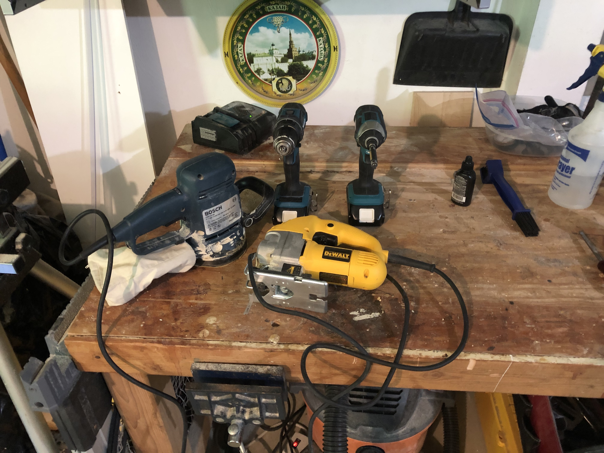
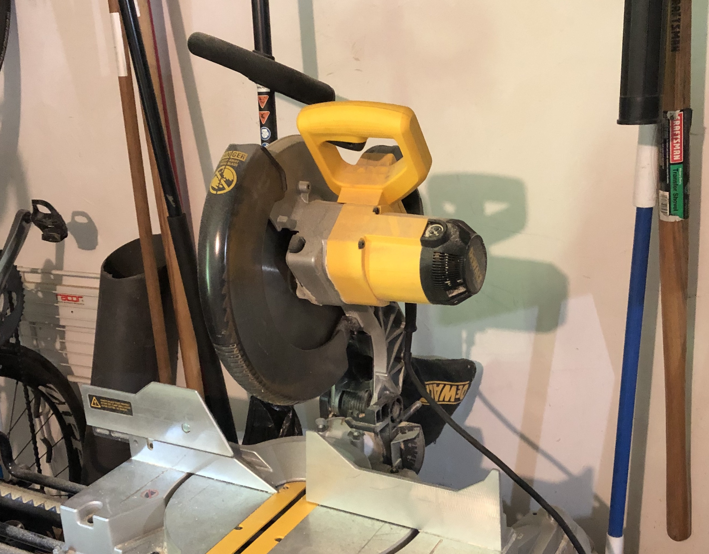
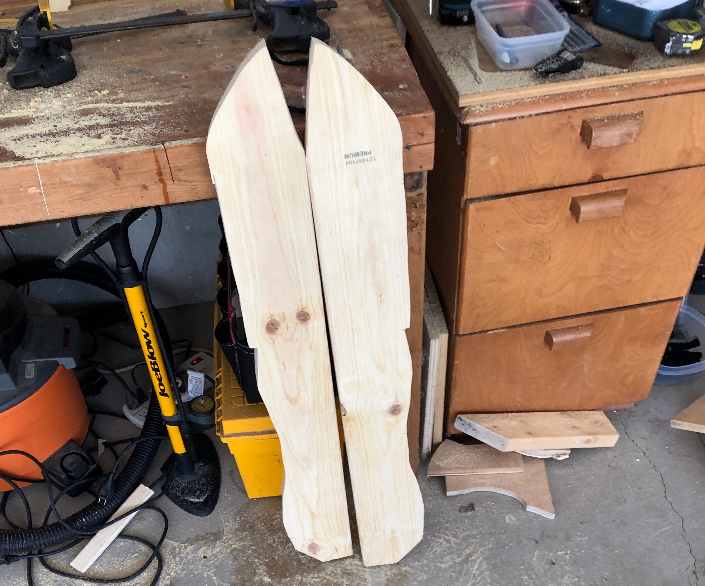
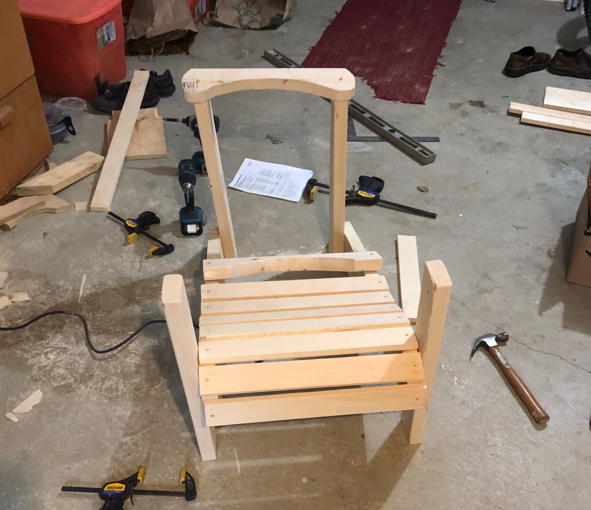
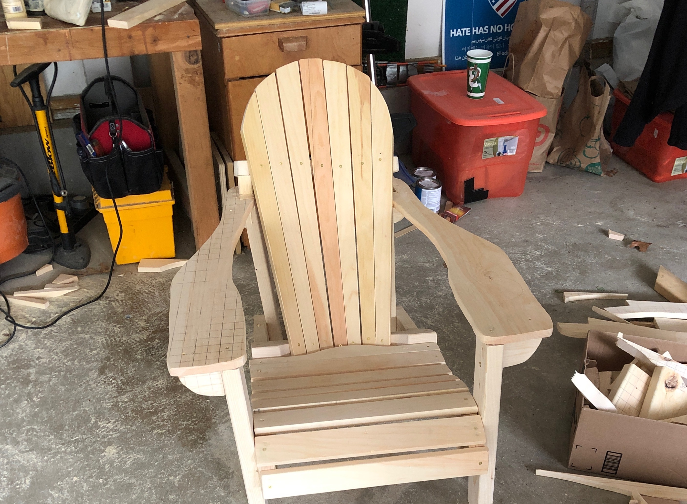
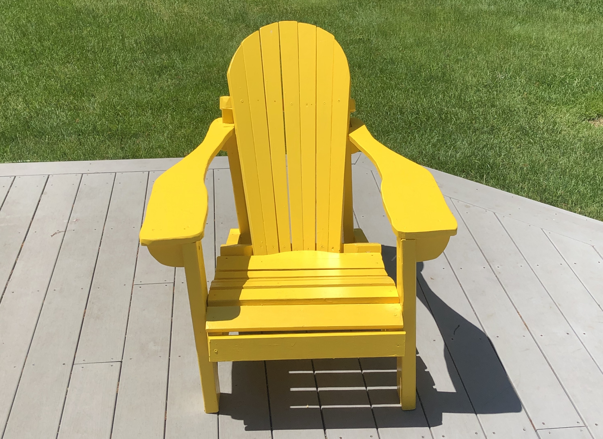
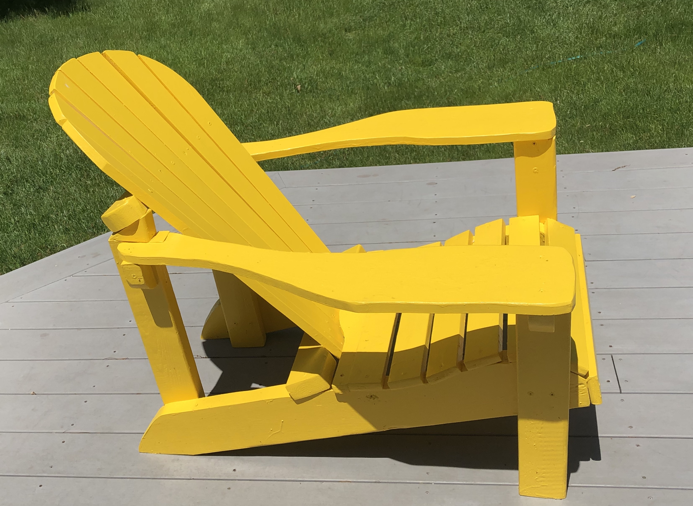
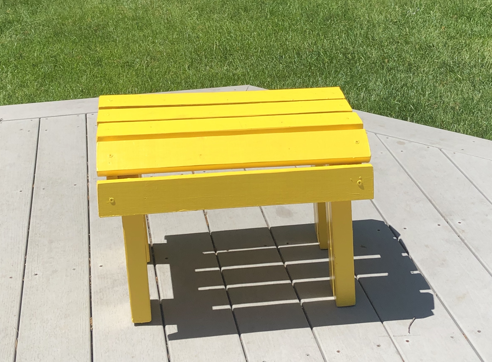
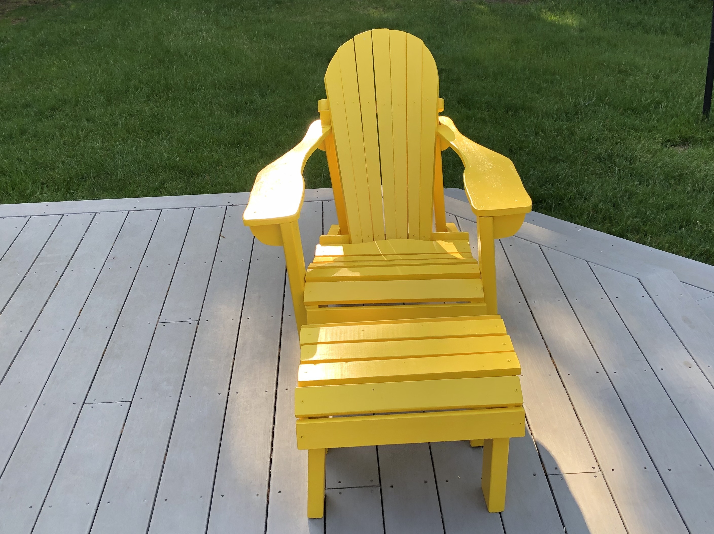

These are the tools I used. I used a jigsaw (the yellow tool) to do most of the cuts because it lets you cut in curved lines, I used the power-sander (the blue tool) to smooth out all of the wood pieces, and I used the drills to put the chair together.

This is a miter saw. I used it to do all of the straight cuts.

These are the first parts of the chair that I cut out. They are the bottom parts of the chair that hold the legs. To cut out all of the pieces, I traced a 1 in by 1 in grid onto the wood and copied the outlines from the plans onto the wood.

This is the chair partially completed. I actually attached the back legs in the wrong direction--the top part is angled down and it should be angled up--which I only realized later. I had to saw off the top part and re-attach it in the corrent position.

This is the final chair without any paint or finish. Notice how the back-slats are thicker at the top. I used a jig and a table saw to cut rectangular pieces of wood at an angle. I want to thank Mr. Wideman, a milton parent, for letting me use his table saw for this part of the project.

This is my final chair. To paint it, I first put on one coat of primer, a solution that helps the paint stick better. I then put two coats of paint on to make sure it was durable, especially because yellow is a light color.

Here is a side view. Despite the mistakes and mis-measurements I made along the way, it's actually quite comfortable.

This is the footstool. It's a little wobbly--the back right leg is a bit shorter than the others--but it gets the job done.

And here's the final product. As the days get hotter, i'm definetely just going to recline in it and relax.